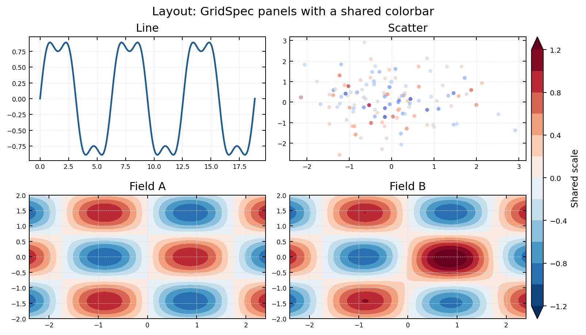

学习目标
- 能用
subplots创建规则多面板。 - 能用共享坐标或共享色标保证比较公平。
- 能判断什么时候使用双坐标轴。
核心概念
比较图应尽量共享坐标范围、色标范围和版式尺度。复杂版式可以使用 GridSpec，但本科练习优先掌握 plt.subplots()。

最小可运行代码
示例用两个二维场共享一个色标，避免每个子图自动缩放。
共享色标多子图
import numpy as np
import matplotlib.pyplot as plt
x = np.linspace(-3, 3, 120)
y = np.linspace(-2, 2, 90)
X, Y = np.meshgrid(x, y)
A = np.sin(X) * np.cos(Y)
B = A + 0.3 * np.exp(-((X - 1)**2 + Y**2))
levels = np.arange(-1.2, 1.3, 0.2)
fig, axes = plt.subplots(1, 2, figsize=(8, 3), dpi=120, sharex=True, sharey=True)
for ax, data, title in zip(axes, [A, B], ["Experiment A", "Experiment B"]):
cf = ax.contourf(X, Y, data, levels=levels, cmap="RdBu_r", extend="both")
ax.set_title(title)
fig.colorbar(cf, ax=axes, orientation="horizontal", pad=0.12, label="Anomaly")
plt.show()常见错误与修正
子图不可比较
坐标或色标范围不同。修正：共享 xlim、ylim、levels。
双坐标轴滥用
两个变量没有共同解释目的。修正：拆成上下子图。
色标挤压子图
每个子图一个色标占空间。修正：多子图共享一个色标。
课堂练习
把 1 行 2 列改成 2 行 1 列，并保持共享色标。
小结
多子图的标准是可比较。共享范围比复杂排版更重要。